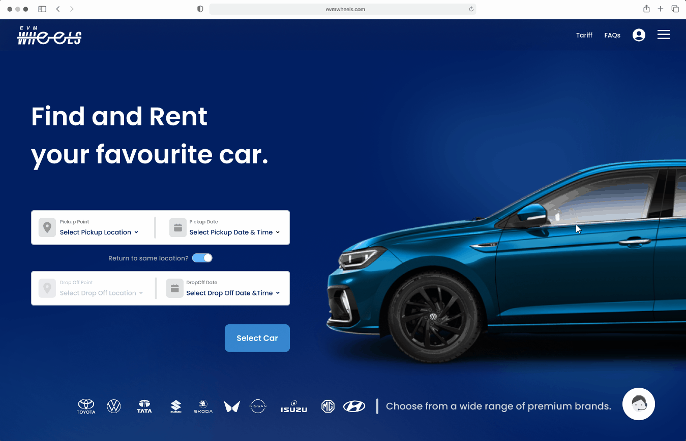
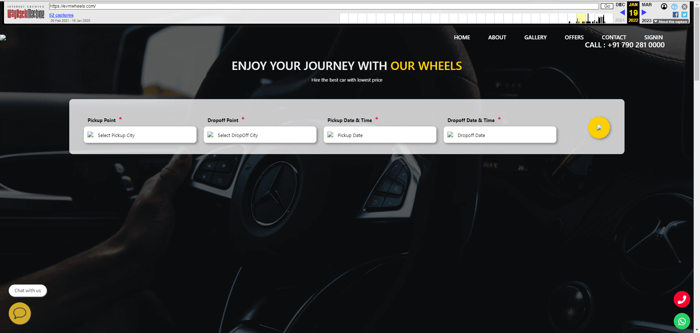

Pricing anxiety
Users wanted deposits, taxes, add-ons, and extra charges surfaced before they committed.
Car and bike rental service / Kerala
A self-drive rental platform redesigned to make vehicle discovery, pricing, checkout, and support feel transparent for tourists, business travelers, and locals.

Challenge
EVM Wheels helps people rent cars and bikes across Kerala. The audience ranged from first-time tourists to repeat business travelers, so the product had to support very different levels of urgency, local knowledge, and comfort with booking online.
Research showed that users were not dropping off because they disliked the vehicles. They were dropping off because the rental process felt uncertain: pricing structures were hard to understand, terms were buried, vehicle comparison was clumsy, and the checkout flow asked for too much too early.
The goal was to turn a cautious rental journey into a confident one.
Research
Users wanted deposits, taxes, add-ons, and extra charges surfaced before they committed.
Availability, insurance, refund policy, and pickup details were hard to locate quickly.
Verification and document steps made the flow feel long, especially for returning users.
Users needed faster reassurance when booking, picking up, returning, or changing plans.
Users
Arjun needs a quick, reliable rental with clear pricing and priority support. For him, the product has to reduce time-to-book without sacrificing certainty.
Sneha wants affordable rentals for spontaneous getaways. She compares options carefully and loses trust when hidden charges or vague policies appear late.
Solution
The landing search focused the user on the booking intent immediately, including pickup and drop location flexibility.
Budget, brand, fuel type, transmission, rating, and availability became visible comparison controls.
Deposits, fees, taxes, and optional charges were separated so users could understand the total before checkout.
Returning users could move faster, and document upload became less disruptive to the payment path.
Screens



Final booking experience, product listing hierarchy, and earlier web capture used to understand the redesign gap.
Usability study
I ran remote, unmoderated usability sessions with more than 20 participants aged 18-50. Sessions focused on whether users could search, compare, understand price, complete checkout, and find support without needing explanation.
The pricing breakdown became more visual, checkout was reduced to fewer clicks, promo and hidden-cost details appeared before confirmation, and live support became easier to reach throughout the journey.